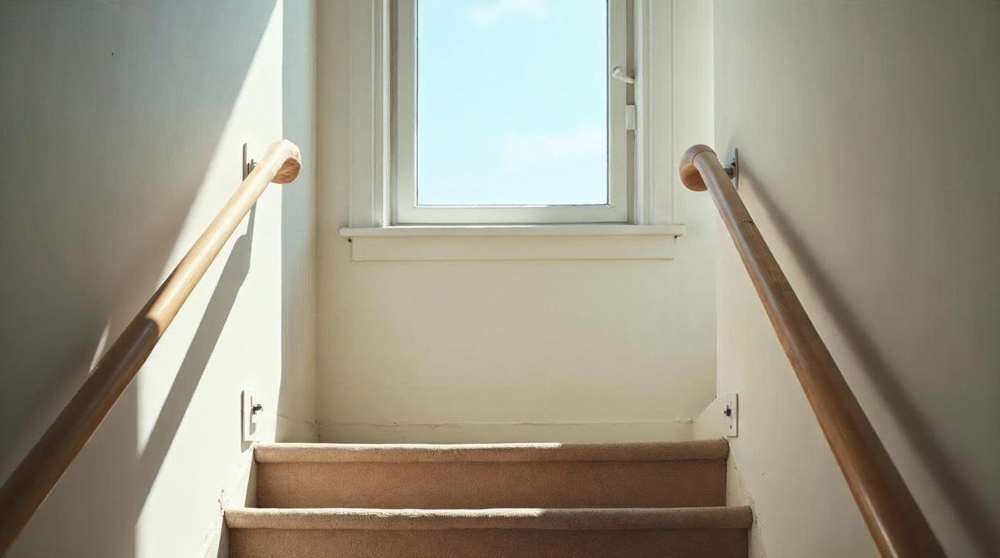
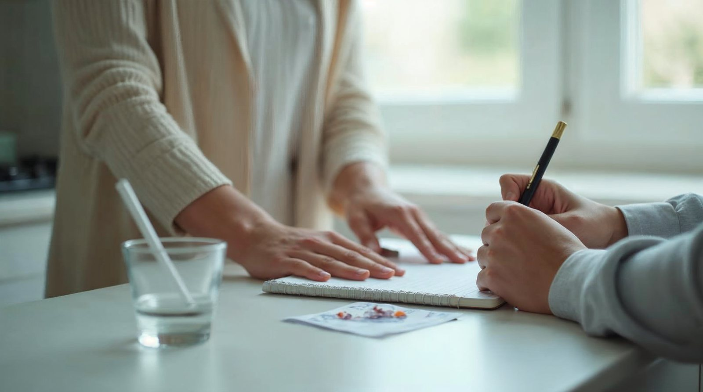
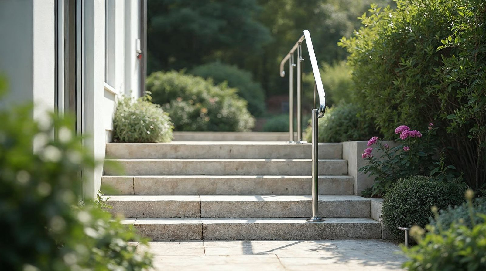
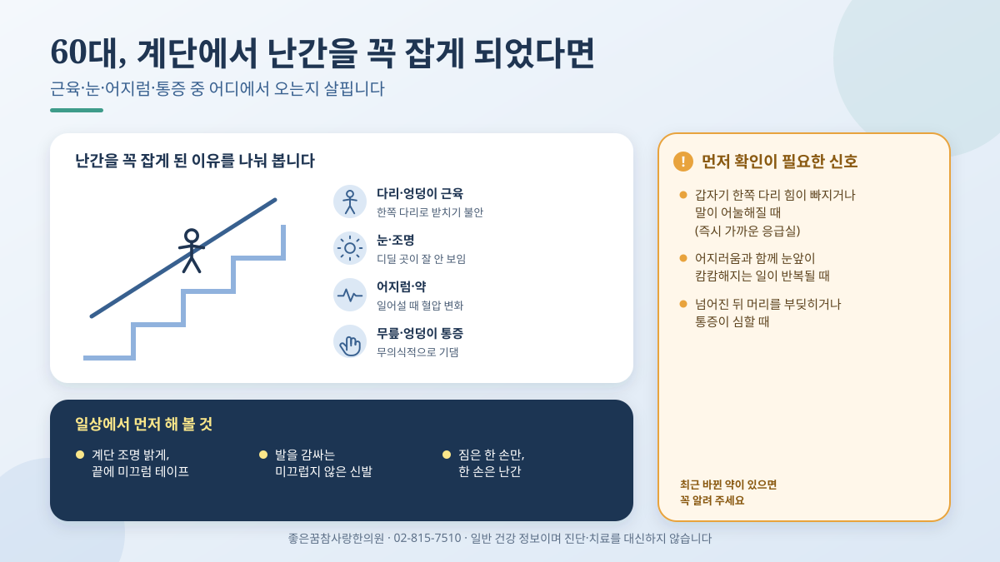

이종호 한의사 감수좋은꿈참사랑한의원 대표원장 (한의사 면허번호 19769)발행 2026-11-23 · 수정 2026-11-26
이 글의 차례
- 왜 이런 불편이 생길 수 있나요
- 먼저 이렇게 여쭙니다
- 일상에서 먼저 해 볼 수 있는 것
- 한의원에서 함께 살필 수 있는 경우
- 얼마나 지켜보고 언제 진료를 받으면 좋을까요
- 이런 경우를 예로 들 수 있습니다
- 스스로 점검해 보세요
- 처음 오시면 이렇게 진행됩니다
- 이렇게 기록해 오시면 상담이 쉬워집니다
- 다리 힘, 균형, 어지럼, 시력 중 무엇 때문인지 이렇게 나눠 봅니다
- 왜 내려올 때가 더 무섭게 느껴질까요
- 집에서 하는 균형·다리 힘 연습
- 집과 동네 계단을 이렇게 점검해 보세요
- 외출을 줄이지 않고 이어 가는 방법
- 복용 약은 이렇게 정리해 오세요
- 난간을 잡는 방법에도 요령이 있습니다
- 가족이 함께 볼 수 있는 변화
- 진료는 어떤 흐름으로 이어지나요?
- 이럴 때는 기록을 들고 진료를 받아 보세요
- 이런 증상은 먼저 확인이 필요합니다
- 관련 글
예전에는 그냥 오르내리던 계단인데 이제는 난간부터 찾게 된다면, 몸이 안전을 위해 보내는 신호일 수 있습니다. 불안해하기보다 이유를 차분히 살펴보면 대비할 수 있는 부분이 많습니다.
왜 이런 불편이 생길 수 있나요
- 허벅지와 엉덩이 근육이 약해지면 한쪽 다리로 몸을 받치는 순간이 불안해집니다.
- 눈이 침침하거나 계단이 어두우면 발을 디딜 위치가 잘 보이지 않습니다.
- 어지럼을 일으킬 수 있는 약이나 일어설 때 혈압이 떨어지는 경우도 영향을 줄 수 있습니다.
- 무릎이나 엉덩이 통증 때문에 무의식적으로 난간에 기대는 습관이 생기기도 합니다.
먼저 이렇게 여쭙니다
- 언제부터 난간을 꼭 잡게 되셨나요?
- 오를 때와 내려올 때 중 어느 쪽이 더 불안하신가요?
- 어지러움이나 눈이 침침한 느낌이 함께 있나요?
- 최근에 넘어질 뻔한 일이 있었나요?
- 복용 중인 약이 최근에 바뀌었나요?

일상에서 먼저 해 볼 수 있는 것
- 계단 조명을 밝게 하고 난간이 있는 쪽으로 천천히 이동하기
- 슬리퍼 대신 발을 감싸고 바닥이 미끄럽지 않은 신발 신기
- 의자를 잡고 천천히 일어났다 앉는 동작으로 다리 힘 유지하기
- 짐을 들 때는 한 손은 비워 난간을 잡을 수 있게 하기
- 계단 끝에 미끄럼 방지 테이프를 붙여 디딜 곳을 눈에 띄게 하기
한의원에서 함께 살필 수 있는 경우
- 계단에서 다리에 힘이 빠지는 느낌이 드는 경우 걸음걸이와 일상 활동량을 함께 살핍니다.
- 무릎이나 엉덩이 통증이 있어 난간에 기대게 되는 경우 아픈 동작과 자세를 함께 살핍니다.
- 몸이 전반적으로 무겁고 피곤한 경우 식사와 잠, 생활 리듬을 함께 살핍니다.
좋은꿈참사랑한의원에서는 걷는 모습과 서고 앉는 동작, 자세를 확인하고 복용 중인 약과 어지럼 여부를 함께 여쭙니다. 필요하다고 판단될 때 침이나 추나 등을 정하고, 귀가 전에는 집 안 계단과 신발에서 바꿔 볼 점을 알려 드립니다.

얼마나 지켜보고 언제 진료를 받으면 좋을까요
- 피곤한 날에만 난간을 더 의지하고 잘 쉰 날에는 괜찮다면, 신발과 조명을 바꾸고 다리 힘 운동을 하며 2~3주 정도 지켜볼 수 있습니다.
- 2~3주 동안 생활을 조정했는데도 불안이 그대로이거나 오히려 늘었다면 진료를 받아 원인을 함께 살펴보시길 권합니다.
- 한 달 사이 넘어질 뻔한 일이 두 번 이상 있었다면 지켜보기보다 진료 일정을 잡아 보세요.
이런 경우를 예로 들 수 있습니다
- 무릎 통증이 생긴 뒤 아픈 다리를 아끼느라 계단에서 한쪽 다리로만 버티게 된 경우, 반대쪽 엉덩이와 허리가 함께 뻐근해지기도 해 무릎과 허리를 같이 살핍니다.
- 최근 혈압약이나 잠을 돕는 약이 바뀐 뒤 아침 계단에서 휘청한 경우, 약을 임의로 끊지 말고 처방한 의사에게 바뀐 시기와 증상을 함께 알리는 것이 먼저입니다.
- 겨울이 되어 바깥 활동이 줄고 실내에서만 지낸 몇 주 뒤 계단이 부쩍 힘들어진 경우, 활동량이 줄며 다리 힘이 함께 떨어진 것은 아닌지 하루 걸음과 생활 리듬을 함께 여쭙니다.

스스로 점검해 보세요
- 의자에서 팔을 쓰지 않고 일어나기가 예전보다 어렵다
- 내려올 때 한 칸마다 두 발을 모으며 내려온다
- 계단에서 발끝이 턱에 걸린 적이 있다
- 어두운 계단이나 저녁 시간에 더 불안하다
- 아침에 일어날 때 어지러운 날이 있다
- 넘어질까 걱정되어 외출을 줄였다
- 최근 몇 달 사이 복용하는 약이 늘거나 바뀌었다
해당하는 항목이 여러 개라면 적어 두었다가 진료 때 보여 주세요. 이 목록은 진단이 아니라 이야기를 정리하는 데 쓰는 참고용입니다.
처음 오시면 이렇게 진행됩니다
접수 때 복용 중인 약 목록과 다른 병원 검사 결과가 있으면 함께 보여 주세요. 원장이 모든 분께 그렇듯 맥부터 짚고, 맥을 짚으면서 언제부터 어떤 계단에서 불안했는지 여쭙습니다.
이어서 걷는 모습과 의자에서 일어서는 동작을 확인하고, 무릎이나 엉덩이 주변 힘줄의 통증이 있다면 필요하다고 판단될 때 초음파로 함께 봅니다. 그 뒤 오늘 할 치료와 이유를 먼저 설명드리고, 치료 뒤에는 잠시 쉬었다가 집에서 해 볼 동작과 다음 방문 간격을 정합니다.
처음 오시는 날은 진찰 시간이 있어 재진보다 오래 걸릴 수 있고, 부모님을 모시고 오신다면 가족 한 분이 함께 오시면 이야기를 정리하기 수월합니다. 좋은꿈참사랑한의원은 서울 동작구 만양로2길 2 신성빌딩 3층·5층에 있고, 건물에 엘리베이터가 있습니다. 휠체어나 주차가 걱정되시면 방문 전 전화(02-815-7510)로 확인해 주세요.
이렇게 기록해 오시면 상담이 쉬워집니다
- 난간을 잡게 된 시기와 계기
- 불안한 상황(내려오기, 어두운 곳, 짐을 들 때 등)
- 복용 중인 약 목록과 최근 바뀐 약
다리 힘, 균형, 어지럼, 시력 중 무엇 때문인지 이렇게 나눠 봅니다
난간을 잡게 된 이유는 한 가지가 아닌 경우가 많아, 어느 쪽의 비중이 큰지 나눠 보면 대비할 방향이 보입니다.
- 다리 힘: 의자에서 팔을 짚어야 일어나고, 계단 한 칸을 오를 때 허벅지가 묵직합니다.
- 균형: 좁은 길이나 울퉁불퉁한 바닥, 어두운 곳에서 몸이 더 흔들립니다.
- 어지럼: 고개를 돌리거나 누웠다 일어날 때, 또는 일어선 직후에 주변이 돌거나 아찔합니다.
- 시력: 저녁이나 흐린 날, 계단 끝 색이 비슷한 곳에서 더 불안하고, 다초점 안경을 쓴 뒤로 내려갈 때 발밑이 흐릿합니다.
- 통증: 무릎이나 엉덩이가 아파 그쪽 다리에 체중을 싣기 싫어 난간에 기댑니다.
진료실에서는 맥을 짚은 뒤 서고 걷고 앉는 동작을 보고, 무릎과 엉덩이의 통증과 어지럼 이야기를 함께 들어 어느 쪽 비중이 큰지 정리합니다.
왜 내려올 때가 더 무섭게 느껴질까요
계단을 내려올 때는 몸이 아래로 떨어지려는 힘을 한쪽 다리가 받아 내며 천천히 내려가야 합니다. 허벅지 앞쪽 근육이 길어지면서 힘을 조절하는 동작이라, 근력이 조금만 줄어도 오를 때보다 먼저 불안이 느껴집니다.
내려올 때는 시선이 발밑으로 향하는데, 다초점 안경은 아래쪽이 가까운 곳을 보도록 되어 있어 계단 끝이 흐릿하게 보일 수 있습니다. 한 번 휘청한 경험이 있으면 몸이 굳고 보폭이 줄어 오히려 더 불안정해지기도 합니다.
그래서 내려올 때만 유난히 무섭다면 다리 힘과 함께 안경과 조명, 계단 끝 표시를 먼저 점검해 보시길 권합니다. 안경을 맞춘 안과나 안경원에 계단에서 불편하다고 말씀해 보시는 것도 방법입니다.
집에서 하는 균형·다리 힘 연습
- 싱크대 잡고 뒤꿈치 들기: 양손으로 싱크대를 잡고 뒤꿈치를 올렸다 천천히 내리기를 몇 번
- 한 발 서기: 싱크대를 한 손으로 잡은 채 한쪽 발을 살짝 들고 잠깐 버티기, 양쪽 번갈아
- 벽 옆 일자 걷기: 벽을 옆에 두고 한쪽 발뒤꿈치를 다른 발 앞꿈치에 붙이듯 몇 걸음
- 의자에서 일어났다 앉기: 팔걸이 있는 의자에서 천천히 몇 번, 익숙해지면 팔을 가슴에 모으고
- 한 칸 계단: 난간을 잡고 맨 아래 한 칸만 천천히 오르내리기
횟수는 아프지 않은 범위에서, 매일 할 수 있는 크기로 정하세요. 하루 이백 번씩 몰아서 하는 것보다 적게라도 날마다 이어 가는 편이 오래갑니다.
연습은 꼭 잡을 곳이 있는 자리에서, 가족이 집에 있는 시간에 하세요. 어지럽거나 무릎이 아프면 그날은 쉬고, 달력에 한 발 서기 시간을 적어 두시면 변화를 스스로 확인할 수 있습니다.
집과 동네 계단을 이렇게 점검해 보세요
- 난간이 한쪽에만 있다면 반대쪽에도 손잡이를 달 수 있는지 알아봅니다.
- 계단 위와 아래 양쪽에서 조명을 켜고 끌 수 있으면 어두운 계단을 걷는 일이 줄어듭니다.
- 계단에 신문, 택배 상자, 신발을 올려 두지 않습니다.
- 자주 가는 지하철역은 엘리베이터 위치를 미리 알아 두고, 불안한 날에는 엘리베이터를 씁니다.
외출을 줄이지 않고 이어 가는 방법
계단이 불안해지면 바깥에 나가는 일 자체를 줄이게 되는 분이 많습니다. 하지만 움직임이 줄면 다리 힘이 더 약해져 계단이 더 무서워지는 흐름이 생기기 쉽습니다.
- 사람이 적고 밝은 낮 시간에 집 근처 평지를 짧게, 천천히 걷는 것부터 시작합니다.
- 친구나 가족과 함께 나가는 날을 일주일에 한두 번 정해 둡니다.
- 지팡이가 마음에 안정을 준다면 쓰는 것을 망설이지 마세요. 손잡이 높이는 팔을 내렸을 때 손목 높이가 무난합니다.
저는 걷기를 권할 때 빨리, 많이 걸으시라고 하지 않습니다. 천천히 발을 디디면 발바닥과 관절이 지금 어디를 밟고 있는지 몸이 하나하나 느끼게 됩니다. 몸의 위치를 느끼는 이 감각을 고유수용성 감각이라고 부르는데, 넘어지지 않으려면 이 감각이 자꾸 자극을 받아야 합니다.
요즘 마음이 위축되어 사람 만나는 일도 줄었다면 그 이야기도 진료 때 편하게 해 주세요. 몸과 마음의 리듬은 함께 움직이는 경우가 많습니다.
복용 약은 이렇게 정리해 오세요
- 드시는 약 봉투나 약 이름이 적힌 처방전을 사진으로 찍어 옵니다.
- 영양제와 건강식품도 함께 적습니다.
- 최근 몇 달 사이 새로 시작하거나 양이 바뀐 약에 표시합니다.
- 약을 드시는 시간과 어지러웠던 시간이 겹치는지 적어 둡니다.
약이 걸음에 영향을 주는 것 같더라도 임의로 줄이거나 끊지 마시고, 정리한 내용을 가지고 처방한 의사와 먼저 상의하세요.
난간을 잡는 방법에도 요령이 있습니다
난간은 잡는 방법에 따라 몸을 받쳐 주는 정도가 달라집니다.
- 내려갈 때는 몸보다 조금 앞쪽 난간을 잡고, 한 칸 내려갈 때마다 손도 함께 옮깁니다.
- 난간을 손바닥 전체로 감싸 쥐고, 손끝으로만 걸치지 않습니다.
- 몸을 난간 쪽으로 너무 기울이지 말고, 몸은 계단 가운데를 향하게 둡니다.
- 양쪽에 난간이 있으면 양손을 모두 쓰고, 한쪽뿐이면 오를 때든 내려올 때든 난간 쪽으로 붙어 다닙니다.
가족이 함께 볼 수 있는 변화
어르신 본인은 매일 조금씩 바뀌는 변화를 잘 느끼지 못하시는 경우가 많습니다. 가족이 보기에 걸음이 느려졌는지, 발을 끄시는지, 계단 앞에서 멈칫하시는 시간이 길어졌는지 알려 주시면 진료에서 큰 도움이 됩니다.
명절이나 주말에 만날 때 계단을 함께 오르내려 보고, 몇 달 전과 비교해 달라진 점을 메모해 오시면 좋습니다. 그 모습을 짧은 동영상으로 남겨 두셔도 됩니다.
진료는 어떤 흐름으로 이어지나요?
첫 진료에서 계단이 불안한 이유를 다리 힘, 균형, 어지럼, 통증으로 나눠 정리하면, 그다음부터는 비중이 큰 쪽부터 함께 돌봅니다. 무릎이나 엉덩이 통증이 크다면 침이나 추나 가운데 필요한 치료를 고르고, 몸이 전반적으로 지치고 잠과 식사가 흐트러져 있다면 생활 리듬을 함께 살핍니다.
아픈 것을 덜 아프게 하는 일도 중요하지만, 다시 힘을 내서 몸을 쓰실 수 있게 돕는 일이 따로 있습니다. 재활이라고 부르는 일입니다. 그래서 저는 오늘 어디가 아프신지만 여쭙지 않고, 앞으로도 계단을 잘 다니시려면 무엇이 필요한지를 함께 봅니다. 집에서 하는 연습도 해 보신 이야기를 듣고 한 단계씩 조정합니다.
이럴 때는 기록을 들고 진료를 받아 보세요
난간을 잡지 않으면 계단을 오르내리기 어려운 날이 늘었거나, 계단뿐 아니라 평지에서도 걸음이 불안해졌다면 진료를 받아 보시길 권합니다. 위에 적은 기록에 그날의 잠과 식사를 한 줄 더하시면 원인을 나눠 보기가 수월합니다.
난간을 잡는다는 것은 몸이 스스로 안전을 챙기고 있다는 뜻이기도 합니다. 부끄러워하실 일이 아닙니다. 다음에 오시면 그사이 계단에서 어떤 순간이 가장 불안하셨는지, 연습은 해 보시니 어떠셨는지부터 여쭙겠습니다.
이런 증상은 먼저 확인이 필요합니다
- 갑자기 한쪽 다리에 힘이 빠지거나 말이 어눌해지는 경우
- 눈앞이 캄캄해지는 어지럼이 반복되거나, 넘어지며 머리를 부딪혔거나 엉덩이·허리가 아파 걷기 어려운 경우
이런 신호가 있으면 한의원보다 가까운 병원이나 응급실을 먼저 찾으세요.
관련 글
- 70대 어르신 집의 욕실과 현관은 낙상을 줄이려면 어떻게 점검하나요?
- 지하철역 계단을 오르내릴 때 어지럽고 다리가 휘청할 때는 어떻게 살피나요?
- 계단을 내려갈 때 무릎이 아프면 한의원에서는 무엇을 먼저 묻나요?

여쭙는 것
- 언제부터 난간을 꼭 잡게 되셨나요?
- 오를 때와 내려올 때 중 어느 쪽이 더 불안하신가요?
- 어지러움이나 눈이 침침한 느낌이 함께 있나요?
생활에서 해 볼 것
- 계단 조명을 밝게 하고 난간이 있는 쪽으로 천천히 이동하기
- 슬리퍼 대신 발을 감싸고 바닥이 미끄럽지 않은 신발 신기
- 의자를 잡고 천천히 일어났다 앉는 동작으로 다리 힘 유지하기
한의원에서 함께 살필 것
- 계단에서 다리에 힘이 빠지는 느낌이 드는 경우 걸음걸이와 일상 활동량을 함께 살핍니다.
- 무릎이나 엉덩이 통증이 있어 난간에 기대게 되는 경우 아픈 동작과 자세를 함께 살핍…
- 몸이 전반적으로 무겁고 피곤한 경우 식사와 잠, 생활 리듬을 함께 살핍니다.
먼저 확인이 필요한 신호
- 갑자기 한쪽 다리에 힘이 빠지거나 말이 어눌해지는 경우
- 눈앞이 캄캄해지는 어지럼이 반복되거나, 넘어지며 머리를 부딪혔거나 엉덩이·허리가 아…
한눈에 보는 표
| 구분 | 핵심 |
|---|---|
| 여쭙는 것 | 언제부터 난간을 꼭 잡게 되셨나요? 오를 때와 내려올 때 중 어느 쪽이 더 불안하신가요? |
| 생활에서 해 볼 것 | 계단 조명을 밝게 하고 난간이 있는 쪽으로 천천히 이동하기 슬리퍼 대신 발을 감싸고 바닥이 미끄럽지 않은 신발 신기 |
| 한의원에서 함께 살필 것 | 계단에서 다리에 힘이 빠지는 느낌이 드는 경우 걸음걸이와 일상 활동량을 함께 살핍니다. 무릎이나 엉덩이 통증이 있어 난간에 기대게 되는 경우 아픈 동작과 자세를 함께 살핍니다. |
| 먼저 확인이 필요한 신호 | 갑자기 한쪽 다리에 힘이 빠지거나 말이 어눌해지는 경우 눈앞이 캄캄해지는 어지럼이 반복되거나, 넘어지며 머리를 부딪혔거나 엉덩이·허리가 아파 걷기 어려운 경우 |
자주 묻는 질문
난간을 잡는 것은 나쁜 습관인가요?
안전을 위한 좋은 습관입니다. 다만 그렇게 해야만 할 만큼 불안해졌다면 이유를 한 번 살펴보는 것이 좋습니다.
집 안 계단은 어떻게 해야 하나요?
미끄럼 방지 테이프와 조명, 손잡이 보강을 점검하면 안전에 도움이 됩니다.
약 때문에 불안할 수도 있나요?
일부 약은 어지럼이나 졸림과 관련이 있을 수 있어, 복용 약 목록을 정리해 처방한 의사와 상의하시길 권합니다.
계단 연습은 하루에 얼마나 하면 되나요?
처음에는 난간을 잡고 맨 아래 한 칸만 몇 번 오르내리는 정도로 시작해, 다음 날 무릎과 다리 상태를 보며 조금씩 늘려 주세요.
좋은꿈참사랑한의원은 재진 때 지난번 이야기부터 이어서 여쭙니다. 진료시간과 예약은 오시는 길에서 확인하세요.
어디서 상담받을 수 있나요?
좋은꿈참사랑한의원은 서울 동작구 만양로2길 2 신성빌딩 3층·5층(서울 동작구 상도동, 7호선 상도역 3번 출구 근처)에 있습니다. 한의사 3명(이종호 대표원장, 조영기 수석진료원장, 정원영 진료원장)이 진료합니다. 진료시간은 평일 09:30~20:00(점심 13:00~14:00), 토·일·공휴일 09:30~15:00이며, 방문 전 전화로 확인을 권합니다. 예약은 네이버 예약, 카카오톡 상담, 전화 02-815-7510로 받습니다.
이 글은 일반적인 건강 정보이며 개인의 진단이나 치료를 대신하지 않습니다. 증상이 있거나 복용 중인 약이 있다면 진료를 통해 확인하세요. 치료 효과는 개인마다 다를 수 있습니다.
작성 기준: 일반적으로 알려져 있는 건강 정보를 참고해 정리했습니다(대표원장 감수). 증상 기록은 1~2주 동안 하루 1회, 비슷한 시간에 적어 오시면 지난 상태와 비교하기 쉽습니다.